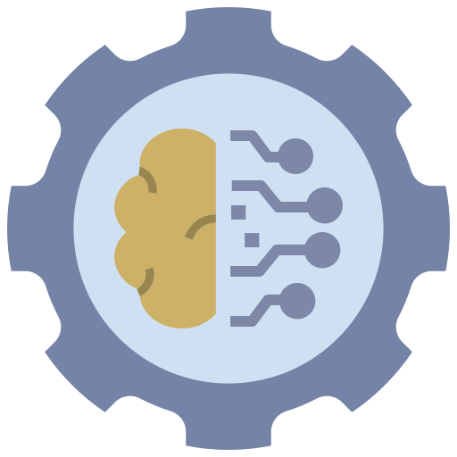
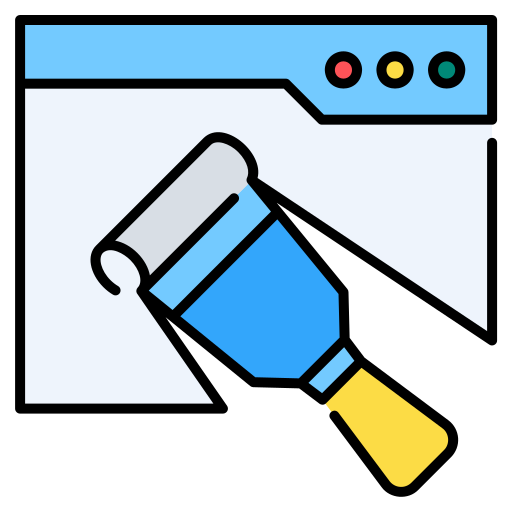
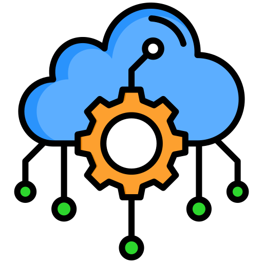
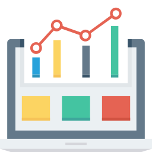
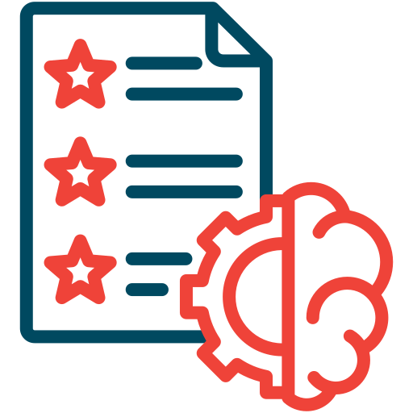
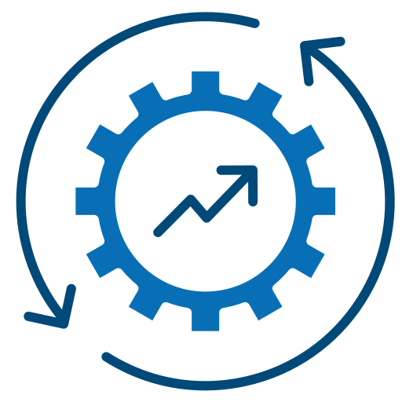
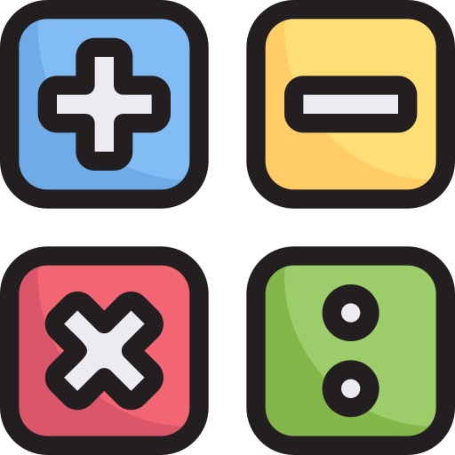

Acerca de mí
¡Hola! Soy Abraham, un científico de datos en sus inicios con una gran pasión por el análisis, la exploración de datos y el modelado predictivo. Me especializo en Python, procesamiento de datos y modelado, buscando siempre transformar datos en información valiosa y accionable.
Actualmente, trabajo en un proyecto de modelado predictivo enfocado en la enfermedad de Alzheimer, donde analizo datos médicos de fuentes confiables como ANSI para identificar patrones y factores de riesgo. Este desafío me ha permitido profundizar en técnicas avanzadas de análisis de datos y aprendizaje automático, reforzando mi capacidad para transformar información compleja en conocimiento accionable.
Soy una persona curiosa y meticulosa, me motiva el reto de enfrentar problemas complejos y encontrar soluciones innovadoras basadas en datos.
Si quieres saber más sobre mi trabajo o explorar oportunidades de colaboración, estaré encantado de conectar. ¡Bienvenido o bienvenida a mi portafolio!
Mis Habilidades
Habilidades Técnicas
-

Python
Lenguaje esencial para la ciencia de datos y machine learning. Manipulación avanzada de datos con Pandas, NumPy y visualización con Matplotlib y Seaborn.
-

SQL
Dominio de consultas SQL para extracción, manipulación y análisis de datos en bases de datos relacionales como MySQL, PostgreSQL y SQLite.
-

Machine Learning
Construcción y optimización de modelos predictivos utilizando Scikit-learn y SnapML. Aplicación de algoritmos supervisados y no supervisados para toma de decisiones basada en datos.
-

Web Scraping
Extracción automatizada de información web con BeautifulSoup y Scrapy, transformando datos en conocimiento útil para análisis y modelado.
-

Cloud Computing
Despliegue y manejo de modelos en la nube con Google Cloud e IBM Cloud Watson AI optimizando rendimiento y escalabilidad de soluciones de datos.
-

Visualización de Datos
Creación de dashboards interactivos y gráficos con Matplotlib, Seaborn, Plotly y Plotly-Dash para convertir datos en insights comprensibles.
-

Feature Engineering
Creación y selección de variables relevantes para mejorar el rendimiento de modelos de machine learning, aplicando técnicas de transformación, encoding y extracción de características.
-

Optimización de Modelos
Ajuste y mejora de modelos de machine learning mediante hiperparametrización, validación cruzada y técnicas avanzadas como Grid Search.
-

IA Generativa
Desarrollo y aplicación de modelos de inteligencia artificial generativa con redes neuronales y modelos avanzados como GPT y GANs para generación de contenido y análisis de datos.
-

Matemáticas
Aplicación de álgebra lineal, cálculo y optimización en el desarrollo de modelos de machine learning y análisis de datos.
-

Estadística
Uso de técnicas estadísticas para inferencia, regresión y pruebas de hipótesis, fundamentales en la toma de decisiones basada en datos.
Habilidades Blandas
-

Resolución de Problemas
Capacidad para analizar y resolver problemas complejos con datos.
-

Comunicación
Explicación efectiva de análisis y resultados a diferentes audiencias.
-

Trabajo en Equipo
Experiencia colaborando en equipos de desarrolladores.
-

Pensamiento Crítico
Evaluación objetiva de datos para toma de decisiones estratégicas.